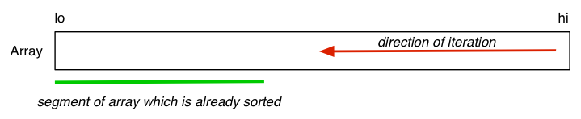

COMP2521 20T2 ♢ Sorting [0/12]
Sorting involves arranging a collection of items in order
- based on some property of the items (e.g. key)
- using an ordering relation on that property
Why is sorting useful?
- speeds up subsequent searching
- arranges data in a human-useful way
(e.g. list of students in a tute class, ordered by family-name or id)
- arranges data in a computationally-useful way
(e.g. duplicate detection/removal, many DBMS operations)
COMP2521 20T2 ♢ Sorting [1/12]
Sorting occurs in many data contexts, e.g.
- arrays, linked-lists (internal, in-memory)
- files (external, on-disk)
Different contexts generally require different approaches
- and sorting has been well-studied over the last 50 years
Our view of the sorting problem:
- arrange an array of
Items in ascending order
- could sort whole array, or could sort a slice of the array
COMP2521 20T2 ♢ Sorting [2/12]
Arrange items in array slice a[lo..hi] into sorted order:
For Item a[N], frequently (lo == 0), (hi == N-1)
COMP2521 20T2 ♢ Sorting [3/12]
❖ ... The Sorting Problem | |
More formally ...
Precondition:
-
lo,hi are valid indexes, i.e. 0 ≤ lo < hi ≤ N-1
-
a[lo..hi] contains defined values of type Item
Postcondition:
-
a[lo..hi] contains same set (bag) of values
- foreach
i in lo..hi-1, a[i] ≤ a[i+1]
COMP2521 20T2 ♢ Sorting [4/12]
❖ ... The Sorting Problem | |
We sort arrays of Items, which could be
- simple values, e.g.
int, char, float
- structured values, e.g.
struct
Each
Item contains a
key, which could be
- a simple value, or a collection of values
The order of
key values determines the order of the sort.
Duplicate key values are not precluded.
In our discussions, we often use the key value as if it is the whole Item
COMP2521 20T2 ♢ Sorting [5/12]
❖ ... The Sorting Problem | |
Properties of sorting algorithms: stable, adaptive
Stable sort:
- let x =
a[i], y = a[j], key(x) == key(y)
- "precedes" = occurs earlier in the array (smaller index)
- if x precedes y in
a, then x precedes y in sorted a
Adaptive:
- behaviour/performance of algorithm affected by data values
- i.e. best/average/worst case performance differs
COMP2521 20T2 ♢ Sorting [6/12]
❖ ... The Sorting Problem | |
In analysing sorting algorithms:
- N = number of items =
hi-lo+1
- C = number of comparisons between items
- S = number of times items are swapped
Aim to minimise
C and
S
Cases to consider for initial order of items:
- random order:
Items in a[lo..hi] have no ordering
- sorted order:
a[lo] ≤ a[lo+1] ≤ ... ≤ a[hi]
- revserse order:
a[lo] ≥ a[lo+1] ≥ ... ≥ a[hi]
COMP2521 20T2 ♢ Sorting [7/12]
❖ Comparison of Sorting Algorithms | |
A variety of sorting algorithms exist
- most are in-memory algorithms, some also work with files
- two major classes: O(n2), O(n log n)
- O(n2) are acceptable if n is small (hundreds)
Ways to compare algorithms:
COMP2521 20T2 ♢ Sorting [8/12]
Concrete framework:
typedef SomeType Item;
#define key(A) (A)
#define less(A,B) (key(A) < key(B))
#define swap(A,B) {Item t; t = A; A = B; B = t;}
void sort(Item a[], int lo, int hi);
int isSorted(Item a[], int lo, int hi);
COMP2521 20T2 ♢ Sorting [9/12]
❖ Implementing isSorted() | |
Implementation of the isSorted() check.
bool isSorted(Item a[], int lo, int hi)
{
for (int i = lo; i < hi; i++) {
if (!less(a[i],a[i+1])) return false;
}
return true;
}
Checks pairs (a[lo],a[lo+1]), ... (a[hi-1],a[hi])
Check whole array Item a[N] via isSorted(a, 0, N-1)
COMP2521 20T2 ♢ Sorting [10/12]
The sort command
- sorts a file of text, understands fields in line
- can sort alphabetically, numerically, reverse, random
The
qsort() function
-
qsort(void *a, int n, int size, int (*cmp)())
- sorts any kind of array (
n objects, each of size bytes)
- requires the user to supply a comparison function (e.g.
strcmp())
- sorts list of items using the order given by
cmp()
Note: the comparison function is passed as a parameter; discussed elsewhere.
COMP2521 20T2 ♢ Sorting [11/12]
❖ Describing Sorting Algorithms | |
To describe sorting, we use diagrams like:

In these algorithms ...
- some part(s) of the array is already sorted
- each iteration makes more of the array sorted
See also
animations
by David R. Martin, Boston College, based on Sedgewick's idea
COMP2521 20T2 ♢ Sorting [12/12]
Produced: 18 Jul 2020
![[Diagram:Pics/sorting.png]](./Sorting_files/sorting.png)